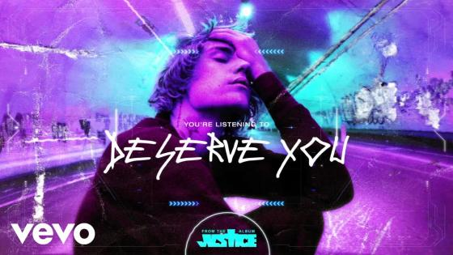

When I'm in my thoughts sometimes
It's hard to believe
I'm the person you think I am
The person that you tell me you love
I'm on my ten thousandth life
Nine thousand nine hundred nine and it slipped my hands
But this the one I'm not giving up
Night after night you fall asleep on me
I'm praying that I don't go back to who I was
I feel like
I don't deserve you tonight
It's in the way that you hold me
I don't deserve you tonight
It's in the things that you show me
I need you, don't let me go
Need you, don't let me go, I feel like
I don't de-, I don't de-, I don't deserve you tonight
I can tend to hold things back
I need you more than I let you believe I do
'Cause you could think it might be too much, oh yeah
I don't want to be my past
Oh, when we kiss I'm alive and I feel brand new
There's nothing that I want more than us (na-na-na-na-na)
Night after night you fall asleep on me (sleep on me)
I'm praying that I don't go back to who I was (oh no, no-no)
I feel like
I don't deserve you tonight
It's in the way that you hold me
I don't deserve you tonight
It's in the things that you show me
I need you, don't let me go
Need you, don't let me go
I feel like
I don't de-, I don't de-, I don't deserve you tonight
Somewhere in the sky
The way your body fits on mine
When you give in to me
I'm so high but I'm falling (na-na-na), uh
And now my eyes are locked on you (yeah)
As you dance around the room
And finally I'm right where I belong, oh, oh-oh
I feel like
I don't deserve you tonight (I don't deserve you)
It's in the way that you hold me
I don't deserve you tonight (I don't deserve you)
It's in the things that you show me (I can't be without you)
I need you, don't let me go (hey)
Need you, don't let me go
I feel like
I don't de-, I don't de-, I don't deserve you tonight
No, I don't, no
(I don't deserve you)
Girl, I need you
I can't breathe without you